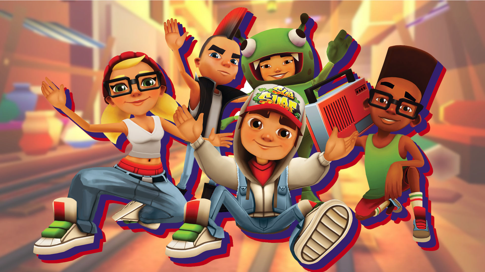

SUBWAY SURFERS
Subway Surfers is a single player mobile gaming app and website developed by Kiloo. The aim of the game is to outrun a train inspector while dodging oncoming trains, barriers and other objects. Collecting coins on the way gives players advantages such as hover boards and high scores.
Our Players
How to Play
1.Swipe up to jump. This lets you jump over obstacles and collect coins in the air. You can't jump high enough to get on the top of a train unless you have the Super Sneakers powerup.
2.Swipe down to roll. You'll need to roll to get under low obstacles.
3.Swipe left and right to switch lanes. Switch lanes to avoid trains, walls, and other obstacles.
4.Double-tap the screen to activate your hoverboard. Your hoverboard allows you to collect more coins and will protect you from a crash.
5.Collect coins to purchase hoverboards and upgrades. Coins are scattered throughout the levels, and you'll need to move quickly to collect as many as possible.